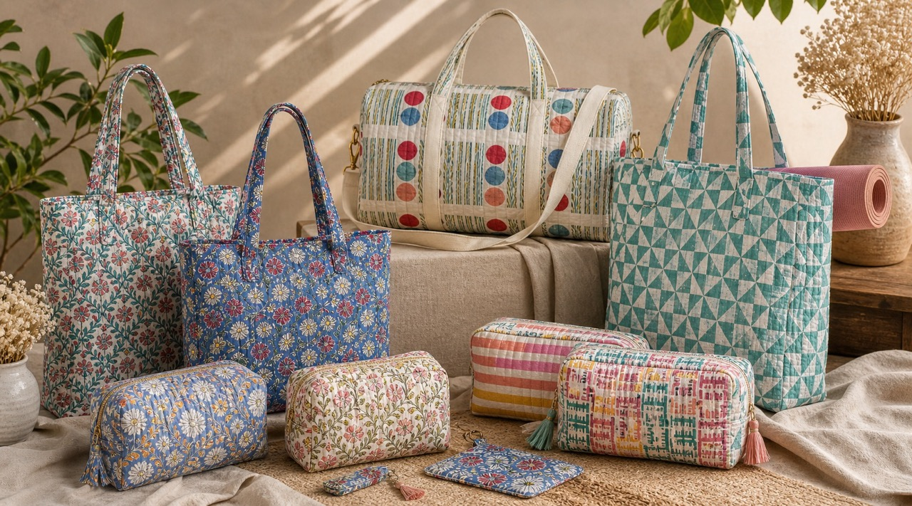
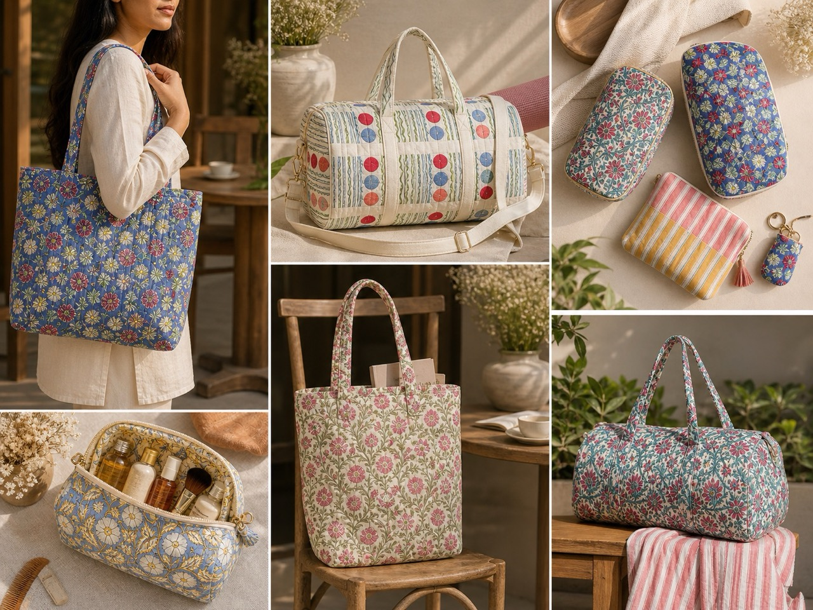
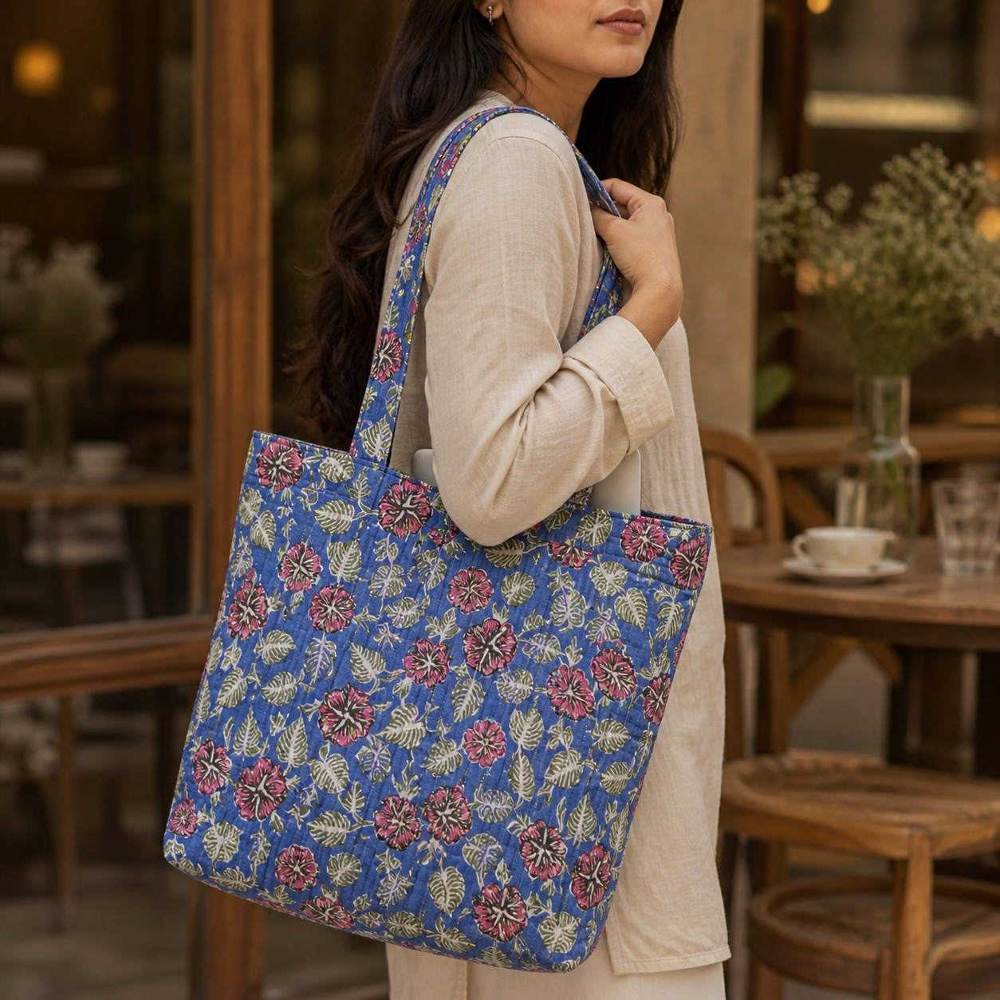
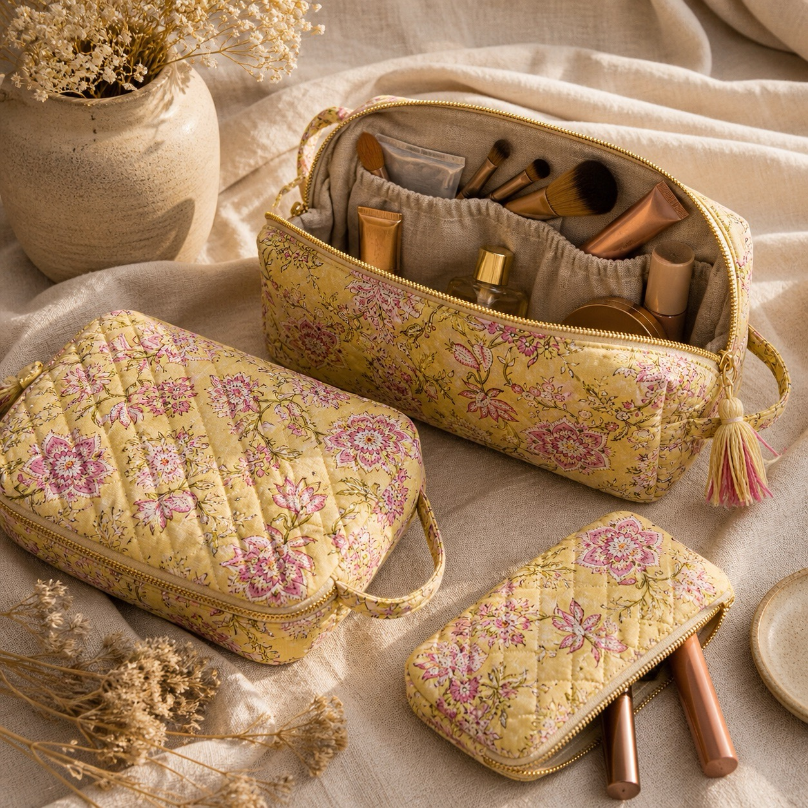
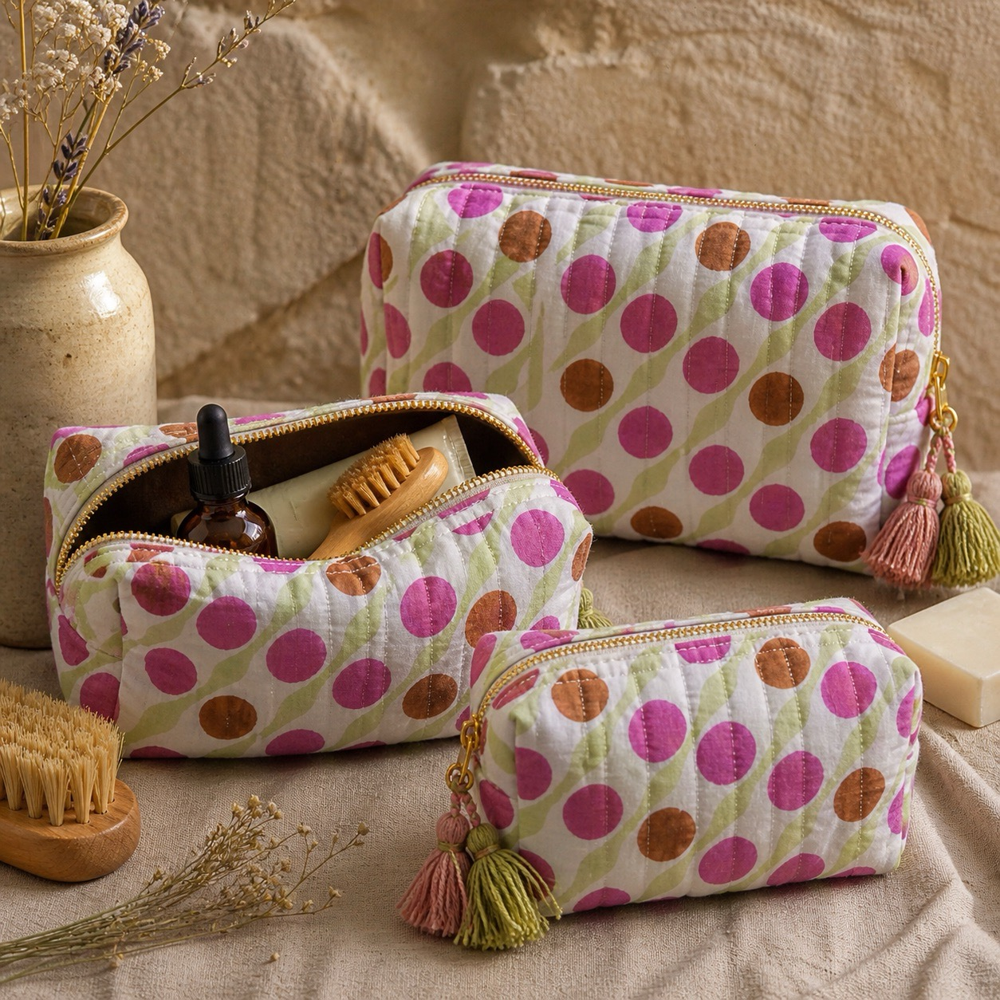
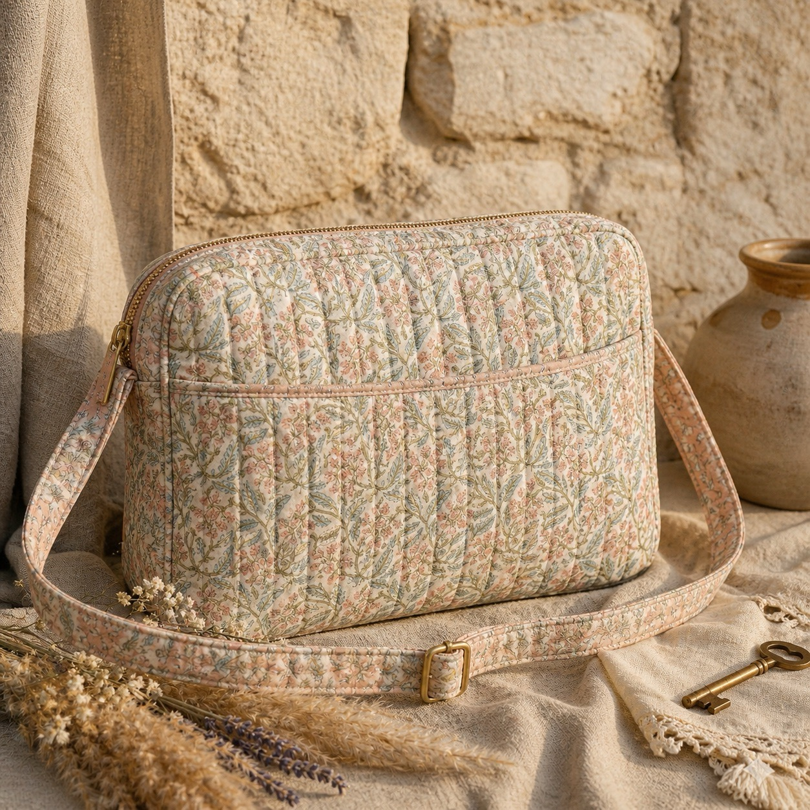

Function with Character
The Carry range brings hand block printing into quilted cotton bags and accessories that feel soft in the hand yet structured enough for daily use. The updated collection moves between floral totes, graphic duffles, compact pouches, and softly finished crossbody styles.
Each piece balances utility with textile detail, making the range especially suited to gifting, boutique retail, wellness travel, and lifestyle buyers looking for natural alternatives to synthetic accessories.

What We Make

Tote Bags
Softly quilted open totes in expressive floral prints, designed for easy everyday carry with a relaxed handcrafted feel.
Everyday quilted carry
Duffle Bags
Roomy quilted duffles with shoulder straps and soft structure, suited to short trips, studio use, and lifestyle gifting.
Travel and studio ready
Makeup Pouches
Compact quilted pouches with soft structure and zip closure, ideal for beauty, travel essentials, and thoughtful gifting.
Beauty and travel use
Toiletry Bag Sets
Coordinated multi-size sets with quilted texture, playful print, and practical zip shapes for travel and home organisation.
Coordinated zip sets
Sling Bags
Light crossbody styles with quilted cotton texture and an easy profile that brings craft detail into everyday movement.
Light crossbody stylingCurated Carry Collections
Mixed assortments built around coordinated prints and shapes, ideal for gifting edits, boutique display, and branded lifestyle collections.
Collection-led assortmentsWho Buys Carry
Boutique Retail
Gift and lifestyle stores looking for colourful quilted accessories with strong visual identity and natural material appeal.
Travel & Wellness
Studios, retreats, and travel-focused buyers sourcing soft duffles, pouches, and practical cotton sets.
Gifting Programs
Curated accessory combinations for festive gifting, branded collections, and elevated merchandise with textile character.
Enquire about the Carry range
For quilted cotton bags, coordinated accessories, or gifting-focused development, get in touch.